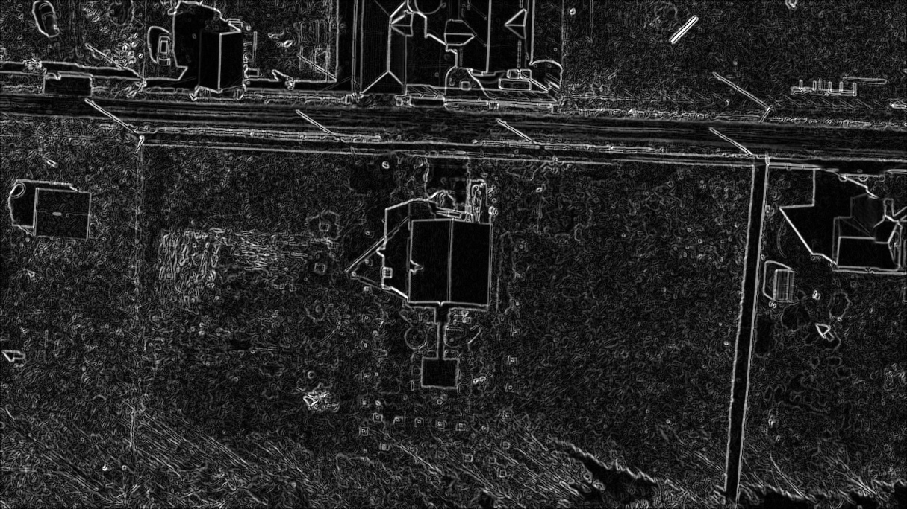

Победа в хакатоне CyberGarden2019

Мы с командой одержали победу с приложением: «Мобильный гербарий». Суть нашего приложения заключаться в сборе гербария посредством фото, получения за это баллов, а также обмене фото с другими пользователями. С помощью нейронных сетей пользователь может, сделав снимок, узнать, лист какого дереве перед ним. Это даёт возможность использовать наше приложение для обучения
Разработка аппаратной реализации скростоной системы шифрования

Проект будет реализован с использованием ПЛИС на основе семейства Artix, обеспечивающих достаточно ресурсов для разработки при низкой потребляемой мощности и удовлетворительном быстродействии для поставленной задачи. Аппаратная реализация криптоалгоритмов позволяет во много раз быстрее, по сравнению с программными аналогами, проводить расчёты и распараллеливать многочисленные однотипные задачи, что так же увеличивает скорость вычислений.
Победа в хакатоне ХакниCOVID-19, проводимым администрацией Ростовской области

Наше "Приложение дополненной реальности для парковых зон с информационным насыщением" заняло первое место. Многие из нас при посещении музеев, парков и иных памятников культуры обращают внимание на информационные таблицы, рассказывающие об истории этого объекта. Приложение первокурсников добавляет в процесс чтения интерактивные элементы, что даёт возможность рассмотреть с разных сторон 3D модель предмета на своём смартфоне, прочитать информацию на виртуальных информационных досках, не ограничиваясь информацией, изложенной на одной реальной таблице.